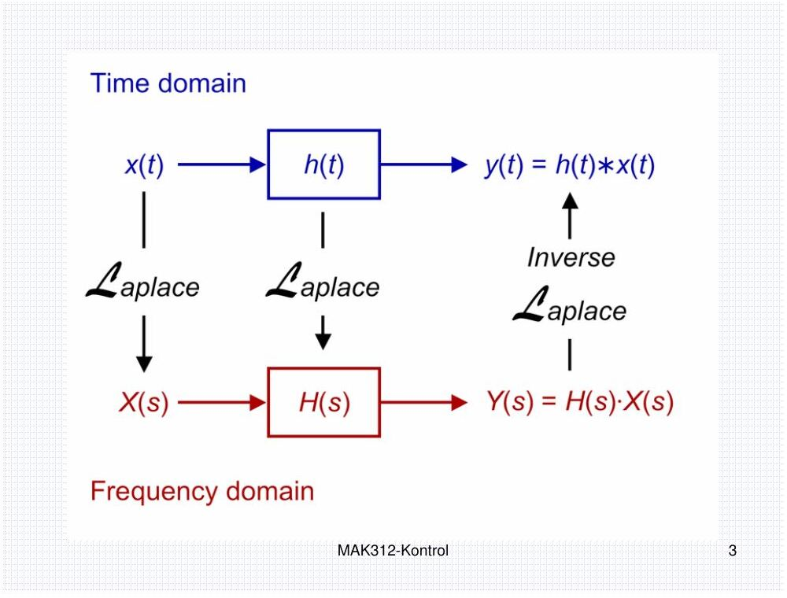
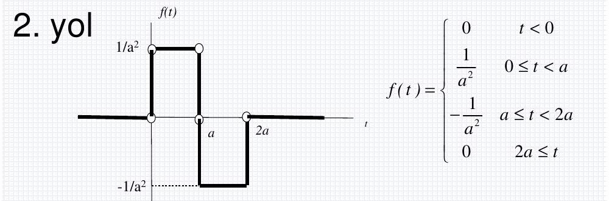

· EEM322
EEM322 Denetim Sistemleri: Laplace Dönüşümü Sunumu (MAK312 Sistem Dinamiği ve Kontrol, 2007–2008 Güz)
EEM322 – Denetim Sistemleri · 05.03.2008 · 16.10.2026
Bu yazı, EEM322 Denetim Sistemleri klasöründe "eem322_kontrol_alper_siteden" alt klasöründe saklanan üçüncü taraf bir sunumdur: MAK312 Sistem Dinamiği ve Kontrol dersinin 2007–2008 Güz dönemi "Laplace Dönüşümü (Laplace Transform)" slaytları. Klasör adına göre bir web sitesinden indirilmiş; sunumda hoca ya da üniversite adı yazmıyor. PDF, sayfa başına iki slayt olacak şekilde 31 sayfa (62 slayt) ve 5 Mart 2008 tarihli. Slayt metinleri ve formüller aşağıya yazı olarak aktarıldı; orijinal PDF yazının sonunda indirilebilir.
Bu içerik üçüncü taraf bir kaynağa aittir; arşiv ve nostalji amacıyla kaynak belirtilerek paylaşılmıştır. Hak sahibinin talebi hâlinde kaldırılır.
Laplace dönüşümü
Doğrusal sistemlerin modellenmesi ve analizi için kullanılan en önemli araçlardan biri Laplace dönüşümüdür. Gücü, doğrusal diferansiyel denklemleri cebirsel denklemlere dönüştürmesinde yatar; sistem dinamiği dersinde çok kullanıldığı için en başta çalışılması gereken konudur.

Bir f(t) fonksiyonunun Laplace dönüşümü, f(t)'yi e^(−st) ile çarpıp t = 0'dan ∞'a integral alarak bulunur. Sonuç, karmaşık Laplace değişkeni s'nin bir fonksiyonudur:
F(s) = L[f(t)] = ∫₀^∞ f(t)·e^(−st) dt
Doğrusallık: L[a·f(t) + b·g(t)] = a·F(s) + b·G(s).
Temel fonksiyonların dönüşümleri
| Fonksiyon | f(t) (t ≥ 0) | F(s) |
|---|---|---|
| Üstel | A·e^(−αt) | A/(s + α) (s > −α) |
| Birim basamak | h(t) = 1(t) | 1/s |
| Ötelenmiş birim basamak | 1(t − t₀) | e^(−st₀)/s |
| Rampa | a·t | a/s² |
| Sinüs | A·sin(ωt) | Aω/(s² + ω²) |
| Kosinüs | A·cos(ωt) | As/(s² + ω²) |
| Vurum (puls), yükseklik A/t₀, süre t₀ | (A/t₀)[1(t) − 1(t − t₀)] | (A/(s·t₀))(1 − e^(−st₀)) |
| Anivurum (impuls) | A·δ(t) | A |
- Rampa: integral kısmi integrasyonla (∫u dv = uv − ∫v du, u = t, dv = e^(−st)dt, v = −e^(−st)/s) çözülür: L[a·t] = a·∫₀^∞ e^(−st)dt/s = a/s².
- Sinüs: sin(ωt) = (e^(iωt) − e^(−iωt))/(2i) yazılarak L = (A/2i)[1/(s − iω) − 1/(s + iω)] = Aω/(s² + ω²); kosinüs benzer şekilde bulunur.
- İmpuls: vurum fonksiyonunda t₀ → 0 limiti alınır; 0/0 belirsizliği L'Hôpital ile çözülür: lim A(1 − e^(−st₀))/(st₀) = As/s = A. Altındaki alan 1 ise birim impuls (Dirac delta) adını alır. t = t₀ anındaki birim impuls δ(t − t₀): t ≠ t₀ için 0, t = t₀'da ∞ ve ∫δ(t − t₀)dt = 1. Birim impuls, birim basamağın türevidir; birim basamak da birim impulsun integralidir.
Bu örneklerdeki gibi integral almak her zaman pratik değildir; bunun yerine hazırlanmış Laplace dönüşüm tabloları kullanılır.
Dönüşüm kuralları
- Zaman ekseninde öteleme: a > 0 için L[f(t − a)] = e^(−as)·F(s). (İspat: τ = t − a değişken değiştirmesi; zamana bağlı fonksiyonlar t < 0'da sıfır kabul edilir.)
- e^(−αt) ile çarpım: L[e^(−αt)·f(t)] = F(s + α). Örnek: L[sin ωt] = ω/(s² + ω²) ⇒ L[e^(−αt) sin ωt] = ω/((s + α)² + ω²).
- Türevler: L[df/dt] = sF(s) − f(0); L[d²f/dt²] = s²F(s) − s·f(0) − ḟ(0); genel olarak L[f⁽ⁿ⁾(t)] = sⁿF(s) − s^(n−1)f(0) − s^(n−2)ḟ(0) − … − f⁽ⁿ⁻¹⁾(0).
- Örnek: g(t) = sin ωt için L[ġ(t)]: I. yol, ġ = ω cos ωt ⇒ sω/(s² + ω²); II. yol, s·ω/(s² + ω²) − g(0) = sω/(s² + ω²).
- İntegral: L[∫f(t)dt] = F(s)/s + f⁻¹(0)/s, f⁻¹(0) = (∫f(t)dt) t = 0'da; belirli integral için L[∫₀ᵗ f(t)dt] = F(s)/s.
- Karmaşık türevleme teoremi: L[t·f(t)] = −dF(s)/ds, L[t²f(t)] = d²F(s)/ds², L[tⁿf(t)] = (−1)ⁿ dⁿF(s)/dsⁿ.
- Konvolüsyon: f₁(t)∗f₂(t) = ∫₀ᵗ f₁(t − τ)f₂(τ)dτ = f₂(t)∗f₁(t) ve L[f₁∗f₂] = F₁(s)·F₂(s).
- İki fonksiyonun çarpımı: L[f(t)·g(t)] = (1/2πj)∫_(c−j∞)^(c+j∞) F(ρ)G(s − ρ)dρ.
Not: Slaytta karmaşık türevleme teoreminde türevler d/dt ile yazılmış; F(s) s'nin fonksiyonu olduğundan türev s'ye göredir (d/ds).
Son değer ve ilk değer teoremleri
Son değer teoremi bir fonksiyonun durağan durum (steady-state) davranışını verir ve yalnızca lim(t→∞) f(t) varsa geçerlidir. sF(s)'nin bütün kutupları s düzleminin sol yarısındaysa f(t) sınırlı bir değere yerleşir. Kutuplar sanal eksendeyse ya da sağ yarı düzlemdeyse f(t) salınır veya üstel olarak büyür ve limit yoktur; örneğin f(t) = sin ωt için F(s) = ω/(s² + ω²), kutuplar s = ∓jω'dır, son değer teoremi uygulanamaz.
Teorem: f(t) ve df/dt'nin Laplace dönüşümleri ve lim(t→∞) f(t) varsa, lim(t→∞) f(t) = lim(s→0) sF(s).
İspat: türev kuralında s → 0 limiti alınırsa lim ∫₀^∞ (df/dt)e^(−st)dt = lim[sF(s) − f(0)]; e^(−st) → 1 olduğundan sol taraf ∫₀^∞ (df/dt)dt = lim f(t) − f(0) olur ve iki eşitlikten sonuç çıkar.
Örnek: F(s) = 1/(s(s + 1)). sF(s) = 1/(s + 1); kutup s = −1 sol yarı düzlemde, limit vardır: lim f(t) = lim(s→0) 1/(s + 1) = 1.
İlk değer teoremi: f(0+) = lim(s→∞) sF(s) (ispatı ödev olarak bırakılmış).
Örnek: çift darbe ve a → 0 limiti

f(t), basamakların toplamı olarak yazılır: f(t) = (1/a²)1(t) − (2/a²)1(t − a) + (1/a²)1(t − 2a). Böylece
F(s) = (1/(a²s))·(1 − 2e^(−as) + e^(−2as))
Aynı sonuç integralle de (2. yol) bulunur. a → 0 limiti 0/0 belirsizliğidir; L'Hôpital iki kez uygulanırsa lim F(s) = −s + 2s = s elde edilir (birim impulsun türevinin, yani birim çift darbenin dönüşümü).
Periyodik fonksiyonlar
T periyotlu bir f(t) için
L[f(t)] = (1/(1 − e^(−Ts)))·∫₀ᵀ f(t)e^(−st)dt
İspat: integral periyotlara bölünür, τ = t − nT ile Σ e^(−nTs)·∫₀ᵀ f(τ)e^(−sτ)dτ elde edilir ve Σ e^(−nTs) = 1/(1 − e^(−Ts)) geometrik serisi kullanılır.
Örnek: 0–T/2 aralığında +1, T/2–T aralığında −1 olan kare dalga için
L[f(t)] = (1/(1 − e^(−Ts)))·(1/s)·(1 − e^(−sT/2))² = (1/s)·(1 − e^(−sT/2))/(1 + e^(−sT/2))
Ters Laplace dönüşümü ve kısmi kesirler
L⁻¹[F(s)] = f(t) = (1/2πj)∫_(c−j∞)^(c+j∞) F(s)e^(st) ds
Buradaki c sabiti F(s)'nin bütün kutuplarından büyük seçilir. Bu integral çok nadiren kullanılır; F(s), dönüşümleri bilinen fonksiyonların bileşenlerine ayrılır ve her biri ayrı ayrı ters dönüştürülür: F(s) = F₁(s) + … + Fₙ(s) ⇒ f(t) = f₁(t) + … + fₙ(t).
Not: Slayttaki ters dönüşüm integralinde üstel terim e^(−sτ) diye yazılmış; doğrusu e^(st)'dir.
Kısmi kesirlere ayırma: F(s) = B(s)/A(s) basit kesir olmalıdır, yani deg A(s) > deg B(s). Değilse önce bölme yapılır: (s + 1)/s = 1 + 1/s.
(i) Farklı kutuplar
F(s) = K(s + z₁)…(s + z_m)/[(s + p₁)…(s + p_n)] = a₁/(s + p₁) + a₂/(s + p₂) + … + aₙ/(s + pₙ), m < n
a_k sabitlerine kalıntı (residue) denir. Eşitliğin iki tarafı (s + p_k) ile çarpılıp s = −p_k konursa a_k = [(s + p_k)F(s)] (s = −p_k) bulunur. L⁻¹[a_k/(s + p_k)] = a_k·e^(−p_k t) kullanılarak f(t) = a₁e^(−p₁t) + a₂e^(−p₂t) + … + aₙe^(−pₙt) elde edilir.
Alıştırmalar: F(s) = 4(s + 1)(s + 2)/[s(s + 1)(s + 2)]; F(s) = (s⁴ + 3s² + 5s + 1)/[s(s + 1)(s + 2)]; F(s) = (s + 4)/(s² + s + 1).
(ii) Tekrarlanan kutuplar
F(s) = (s² + 2s + 3)/(s + 1)³ = b₁/(s + 1) + b₂/(s + 1)² + b₃/(s + 1)³. İki taraf (s + 1)³ ile çarpılırsa (s + 1)³F(s) = (s + 1)²b₁ + (s + 1)b₂ + b₃:
- s = −1'de: b₃ = (s² + 2s + 3) = 2
- birinci türevde s = −1: b₂ = (2s + 2) = 0
- ikinci türevde s = −1: 2b₁ = 2 ⇒ b₁ = 1
F(s) = 1/(s + 1) + 2/(s + 1)³, L⁻¹[1/(s + a)ⁿ] = tⁿ⁻¹e^(−at)/(n − 1)! f(t) = e^(−t) + 2·t²e^(−t)/2! = e^(−t)(1 + t²)
MATLAB ile kısmi kesirler
F(s) = B(s)/A(s) = (b(1)s^m + … + b(m))/(a(1)s^n + … + a(n)) için num ve den katsayı vektörleriyle [r,p,k] = residue(num,den) kalıntıları (r), kutupları (p) ve tam kısmı (k) verir. Örnek:
pay = [1 -8 17 -6 -2];
payda = [1 -10 31 -30];
[r,p,k] = residue(pay,payda)
% r = 3, 1, 2 p = 5, 3, 2 k = 1 2
[pay,payda] = residue([3 1 2],[5 3 2],[1 2]) % ters yönde: kesirlerden polinomlaraF(s) = (s⁴ − 8s³ + 17s² − 6s − 2)/(s³ − 10s² + 31s − 30) = s + 2 + 3/(s − 5) + 1/(s − 3) + 2/(s − 2)
Not: Slaytta sonuç "3/(s + 5) + 1/(s + 3) + 2/(s + 2)" diye yazılmış; MATLAB ekran görüntüsündeki kutuplar p = 5, 3, 2'dir ve payda (s − 2)(s − 3)(s − 5)'e ayrılır, yani paydalar s − 5, s − 3, s − 2 olmalıdır.
Doğrusal, zamanla değişmeyen diferansiyel denklemlerin çözümü
İki adım izlenir: (1) diferansiyel denklemin her teriminin Laplace dönüşümü alınır, s'ye bağlı cebirsel bir denklem elde edilir ve bağımlı değişken X(s) yalnız bırakılır; (2) X(s)'e ters Laplace dönüşümü uygulanarak zaman fonksiyonu bulunur. Türevlerin dönüşümleri:
L[x(t)] = X(s), L[ẋ(t)] = sX(s) − x(0), L[ẍ(t)] = s²X(s) − s·x(0) − ẋ(0) L[x⁽ⁿ⁾(t)] = sⁿX(s) − Σ(k=1…n) s^(n−k)·x⁽ᵏ⁻¹⁾(0)
Alıştırmalar:
- Örnek 4: y⃛ + 6ÿ + 11ẏ + 6y = 2t, y(0) = ẏ(0) = ÿ(0) = 0
- Örnek 5: ẍ + 2ẋ + 5x = 1, x(0) = 0, ẋ(0) = 2